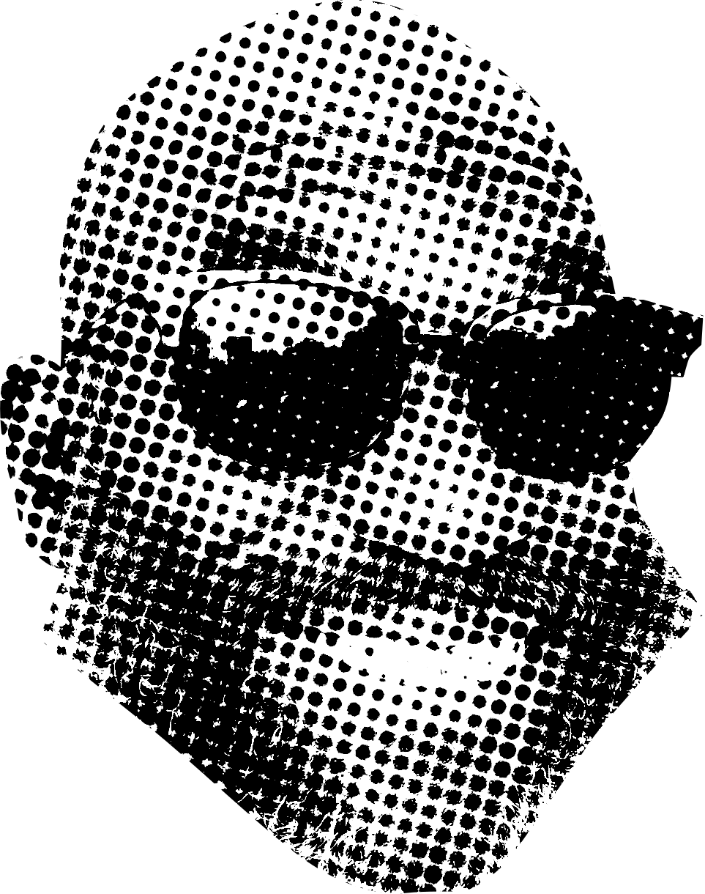
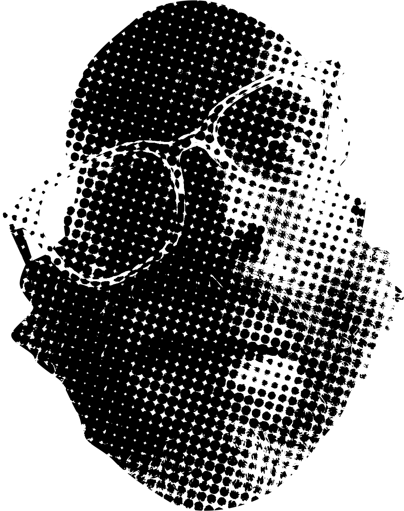

More than a list of projects, this page has become a map of my journey from novice to expert in the new domain of AI Engineering.
After more than 15 years in tech roles, I became a novice once again back in January of 2025. Driven by curiosity and stubbornness, I've emerged out the other end with an entirely new skill stack.
The work
A story in four parts

Peak of Mt. Stupid
memory.audio
"Learn anything in a week" was the slogan. Working the floor at Amazon CLE2, I needed something to keep my mind alive during 12 hour shifts. A pile of scripts I had running on my laptop would generate audio lessons before work and I'd loop them all night. Game theory, Information theory, Model of Hierarchical Complexity, Investing - all of the topics that interested me were only a prompt away.
Leverage · the move
I deployed it. Getting this project online was the first step in a feedback loop we called building in public over on X. Talking about the lightcone, shipping projects, & encouraging one another. The app got about 100 users and I enjoyed looking through the lessons other people were generating for themselves.
Unintended consequences · the ripple
The research into memory span and information theory drove feature development. I added cognitive assessments grounded in memory-science frameworks, Then a multi-voice podcast format. The realization that I was making a tool to program my attention. At the peak, memory.audio lessons were the bulk of my information diet and this has compounded.
Constraint · the wall
With no business model it was an expensive hobby and just before the third release, it dawned on me that I was building a worse version of NotebookLM. That's not actually true. There isn't another product focused on training and measuring your memory or intentionally programming your attention. I'm thinking about retooling it as an LLM skill at some point.
No live page

Valley of Despair
sceneSprint
A 24-hour hackathon project that matches your webcam image to a famous movie poster. This project concretized some of the abstract concepts of ML for me. Also, revealed the biggest risk of relying on coding agents.
Leverage · the move
Coding agents. I let AI do the building and had a working computer-vision app running
in a few hours. A learning/building workflow emerged. Leverage the LLM as a thought partner to flesh out the end experience, then take a step back to examine the new domains of knowledge involved. Inquire into the established mental models and frameworks already rooted in that domain. What software solutions have already been published. Then, design the processes required to deliver the end result and only then, write the PRDs. Dispatch work to the agent(s) and carefully merge the pieces into a whole.
Unintended consequences · the ripple
Fast progress bred a dangerous confidence. I overestimated how tightly coupled the agent was with the codebase. About an hour before the hackathon deadline, I had a (very poor) image matching tool. At the peak of my hubris, I decided to refactor the pipeline to improve the matching quality. Copilot crapped the bed and I spent about twenty minutes crashing out. In the end, I had nothing to show for the brutal 24 hour session.
Constraint · the wall
Only in the post-mortem I learned that the image matching results were weak because I'd hand-picked the features based on assumptions (pose estimation & color analysis), so the model was only ever as good as my guesses. I didn't even know what a sparse encoder was nor had I read the bitter lesson at that point. Now I know that the answer is to let the system learn the representation straight from data.
App blockers help users manage screen time by blocking distracting apps. It's a crowded but lucrative segment. Taking the advice of more successful builders, I tried not to reinvent the wheel this time around but instead, started with an existing product segment and business model.
Leverage · the move
Inside Android Studio, the first time I dropped a high fidelity mock into the chat and it generated a functional UI screen was a major unlock. I iterated on the UI design entirely in Figma and built with the agent. Only had to touch the code when Copilot agent had gotten into a loop trying to squash a bug.
Unintended consequences · the ripple
I set out to earn and all I did was learn. Seriously, a year of effort mapped the action-space of product development & GTM. I touched every surface that wasn't code & design (twice).
Constraint · the wall
The last thing I considered as a builder were the actual human beings I would need to install my app for a 14 day closed beta. I had some idea about the userbase in abstract, but those twelve specific humans were required by Google to get my app into the Play Store.
At a time punctuated by often fatal violence against rideshare drivers in Cleveland, I was assaulted by a passenger at 2a.m. on a Friday. It could have been much worse, but I was shaken by the experience. Staying present & de-escalating a chaotic situation while adrenaline flooded my brain. Shocked & disappointed with the indifference of local police and the Lyft safety team who attempted to send me back to the very same neighborhood in my next ride offer. RedLine is the feature Lyft would never ship. Drivers can filter ride offers based on geofenced areas they want to avoid.
Leverage · the move
RedLine is free and has no business model, but I still positioned it to reach as many drivers as possible. Rideshare subreddits put me in contact with the community of rideshare drivers online. The story of its inception was the biggest leverage I discovered. Previous projects were at most a fascination but RedLine has a mission.
Unintended consequences · the ripple
While the core value proposition is the ride offer filter, in capturing the pick-up and drop-off location to cross-reference with users' geofences, we end up grabbing lots of data about the ride; information that the Lyft driver app doesn't offer drivers. On several occasions, I've referenced the detailed ride logs to clear up issues with customer service. It turns out that this data set is useful for training a ride-scoring feature or some other classifier.
Constraint · the wall
It's unlikely that RedLine will be accepted into the Google Play store. By leveraging Android accessibility features, RedLine is able to see the actual UI components of the Lyft app. This worked far better than OCR-ing pixels.
If we had a programmable network of human actuators, completing any real-world task would be as simple as making an API call. With NPC, I'm exploring what impact AI could have on labor markets. The #BuildWithGemini XPrize hackathon presents an ideal opportunity to make progress on the idea and get distribution.
Leverage · the move
The move was to spend less time thinking about software and more time out in the world. I spent less time brainstorming and set out towards a specific outcome; 'what if I could upload an image file and have a human street-team spreading my idea in sticker form all over town'. Then, problem-solving forward, documenting the effort and publishing a video. Several of those tight cycles have driven this project deeper into real-world specificity.
Unintended consequences · the ripple
Building my way forward and ideating with AI has sharpened the focus from labor to the proof. The hypothesis of the business is that the layer where AI verifies the work (that a shelf really is out of stock, that the task really happened) is actually the product. The focus has become less "people doing things" and more a system that produces verified truth about the physical world.
Constraint · the frontier
The primary constraint is finding real customers for the service. This demands specificity and I'm going deep down the path of retail execution. Preparing for a pilot program while hardening the CV pipeline of the software.